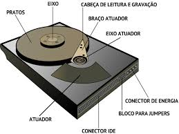
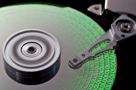
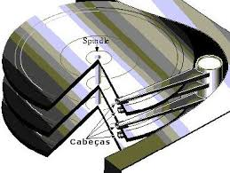
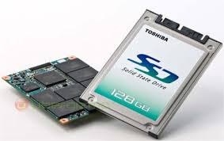

Disco Rígido ou Disco Duro, popularmente chamado também de HD (derivação de HDD do inglês hard disk drive) ou winchester (termo em desuso), "memória de massa" ou ainda de "memória Principal" é a parte do computador onde são armazenados os dados. O disco rígido é uma memória não-volátil, ou seja, as informações não são perdidas quando o computador é desligado, sendo considerado o principal meio de armazenamento de dados em massa.Por ser uma memória não-volátil, é um sistema necessário para se ter um meio de executar novamente programas e carregar arquivos contendo os dados inseridos anteriormente quando ligamos o computador. Nos sistemas operativos mais recentes, ele é também utilizado para expandir a memória RAM, através da gestão de memória virtual. Existem vários tipos de interfaces para discos rígidos diferentes: IDE/ATA, Serial ATA, SCSI, Fibre channel, SAS. | ||
|  |  | |
|  |  | |